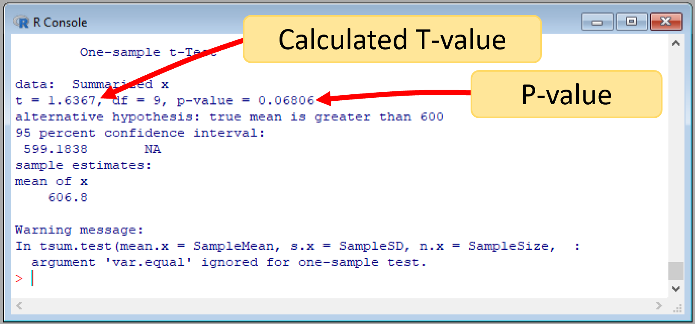

The one-sample T-test in R
We can run a T-test in R, using the package BSDA, and its function tsum.test. Lets try it.
library ("BSDA") #load the library
Sample=c(587, 602, 627, 610, 619, 622, 605, 608, 596, 592) #lets put the values in a vector
SampleMean=mean(Sample) #this is the sample mean
SampleSD= sd(Sample) #this is the sample standard deviation
SampleSize=length(Sample) #sample size
PopulationMean= 600 #this is the population mean...or the expected score, which is assumed to be 600 points
tsum.test(mean.x=SampleMean, s.x = SampleSD, n.x = SampleSize, alternative = "greater", mu = PopulationMean, conf.level = 0.95)
#the parameters needed to run a T-test are self-explanatory. mean.x is the mean of your sample data. alternative is the type of test to run, in this case we want to check is the sample is greater than the population mean. mu is the population mean, and s.x is the standard deviation of the sample. This function ask for the confidence level, which as we indicated before is the complement to the level of significance to use, in our case our significance level is 0.05, so the confidence level will be 0.95The results will look like the image below, which are nearly identical to our hand calculation.

Figure 10.8: R-results for a one-sample z-test